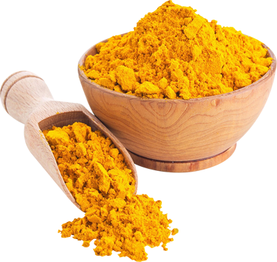

In ancient times, people used turmeric, which is a spice that comes from the turmeric plant. Turmeric contains a chemical called curmeric, which produces anti-inflammatory activity in your cells, relieving the pain. After turmeric began to become more scarce, people began to look for alternative methods to relieve pain.

Turmeric - Yellow chunks extracted from the turmeric plant, used to relieve pain
Curmeric - Chemical in Turmeric used to relieve pain